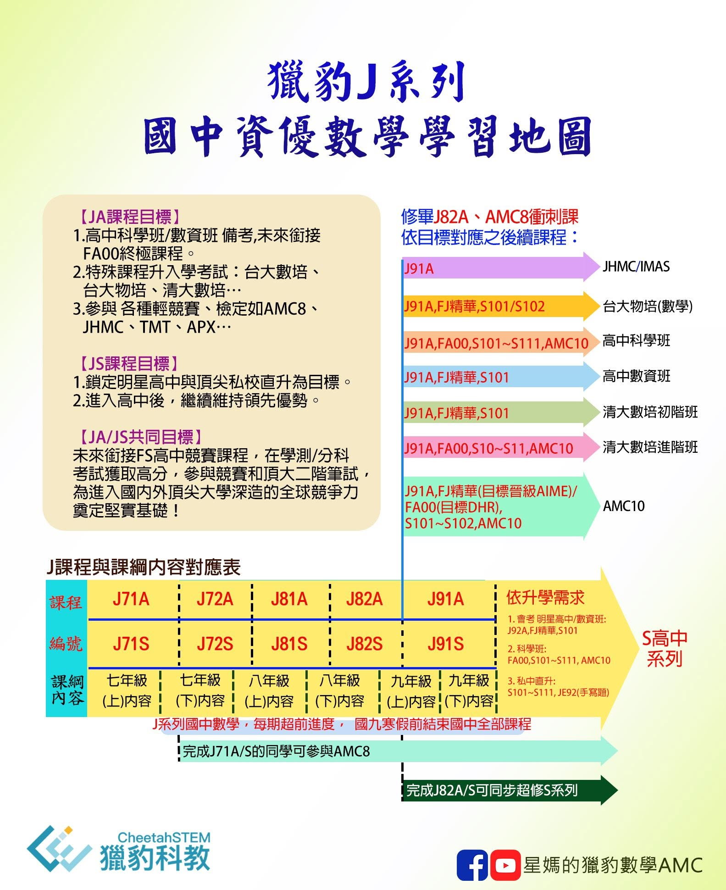
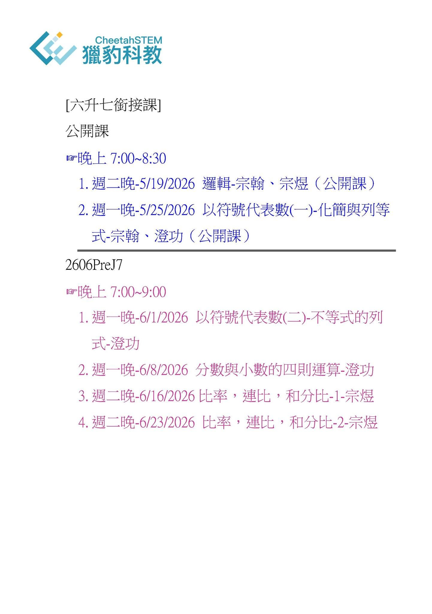
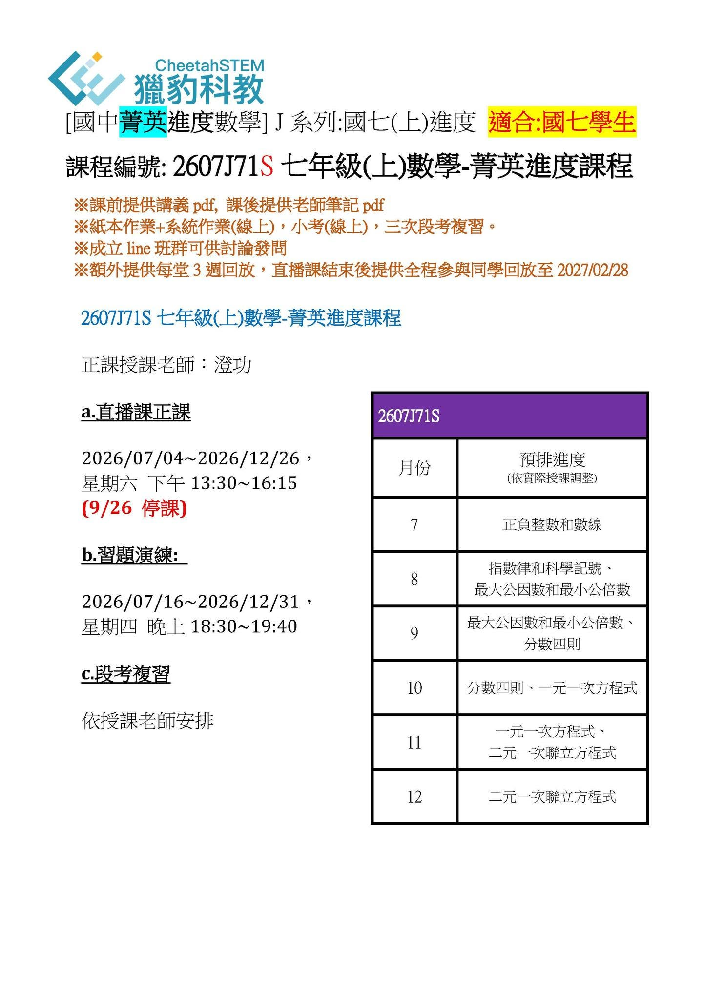
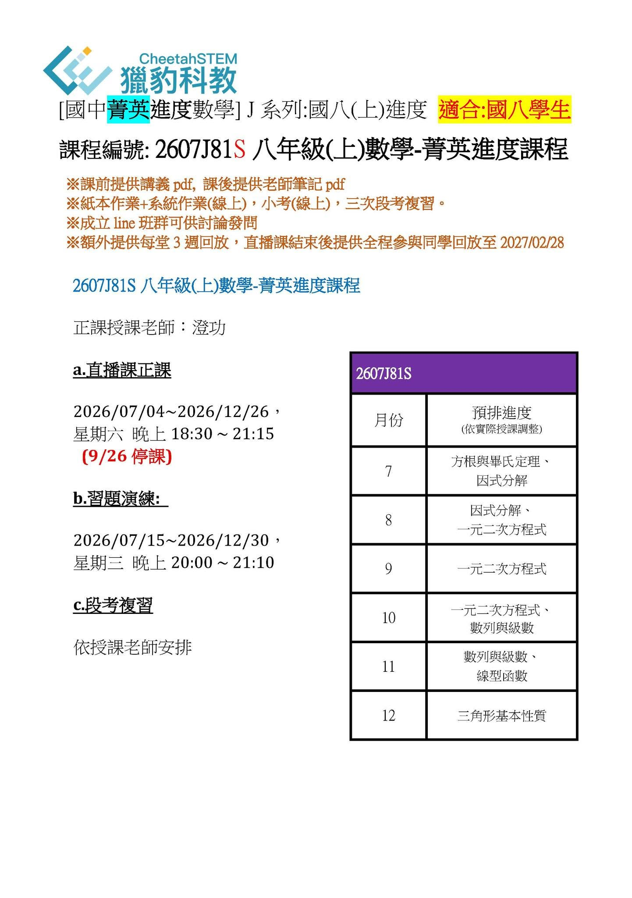
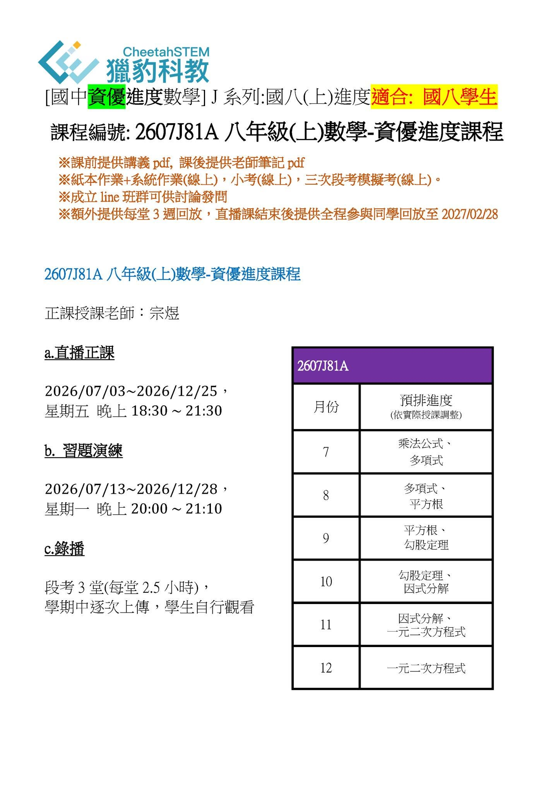
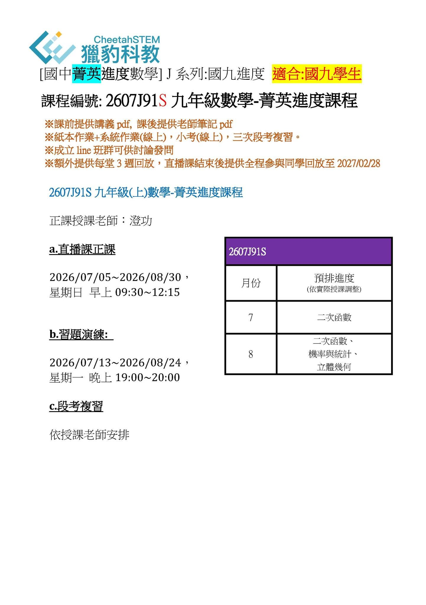
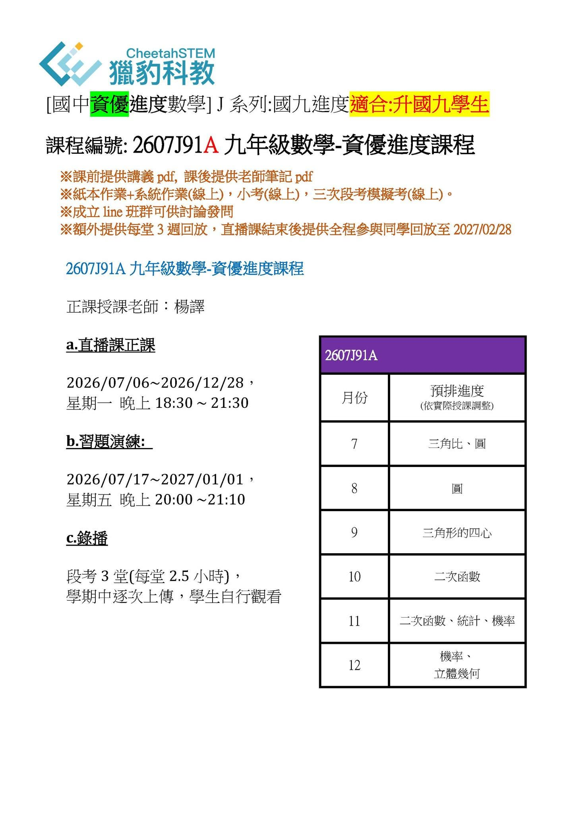
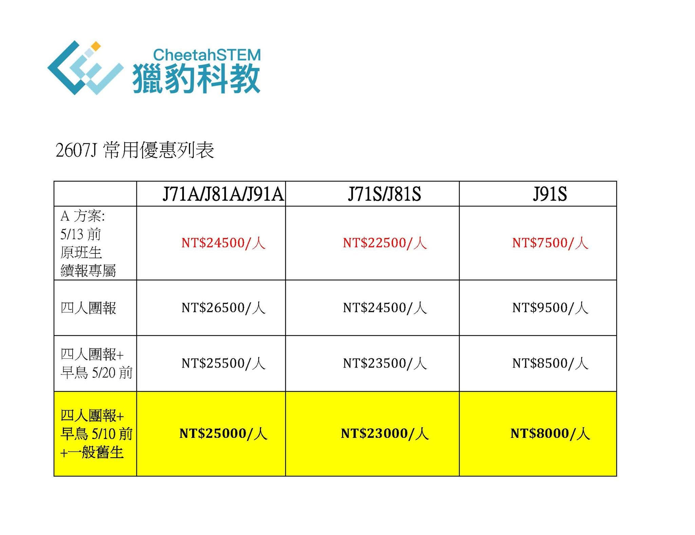

2026/07 獵豹國中數學J課程 開跑了！
課綱資優進度：J71S七(上)、J71A七(上)、J81S八(上)、J81A八(上)、J91S九、J91A九
前瞻／超前／加深／加廣，J課程讓您一路領先、一騎絕塵，幫你佈局六年頂大之路。
課程理念與目標
選擇獵豹，向成功者學習！
- 獵豹匯集密度最高的頂尖學子，你將與最高素質的同儕並肩而行
- 獵豹擁有最高水平的教學團隊（國內外頂尖大學教授／博士、資深數競教練、資優教育專家）
- 獵豹擁有最高水平的教材研發團隊與教材（全球蒐羅、前瞻開創）
- 獵豹不用華麗虛幻的廣告詞，我們用紮實的教學、傲人的成績自證卓越
獵豹以課綱為基礎，更超越課綱、增加強度深度。這不僅體現在學校的成績上——除了對錄取明星高中十拿九穩、為科學班／數資班入學考試奠定穩固基礎，更建立學生數理科長期的優勢。
進入高中後順利銜接獵豹S高中系列課程，將來繼續在明星高中、頂尖大學仍維持名列前茅的表現。
獵豹國中課綱資優數學J系列定位為「菁英教育」模式，絕不是「只收頂尖孩子」的階級教育，而是強調：
- 不怕困難、享受挑戰的學習態度，期勉孩子能有追求卓越、超越自我的學習精神
- 採取啟發式、探討式的教學，激發孩子對數學／科學的熱情
- 使用專業、科學的訓練方法，達到最佳效率、高品質的學習成果
- 以專家模式潛移默化，薰陶出真正的高手思維
JA班 與 JS班
為了讓更多不同基礎背景、不同興趣／性向的孩子都能加入獵豹的學習行列，獵豹在原有J系列「JA班」外，再增設「JS班」。
JS在原來JA「課程難度」與「偏重方向」上做適當調整：內容導向有別於JA偏重「科學／數資班備考／輕競賽」，JS更聚焦於「明星國中段考精華題」、「頂尖私中段考難題」與「升學考試（會考）」。
獵豹JA／JS系列：完整課綱內容，由淺入深，加深加廣。J課程除了基本課綱知識之外，還延伸和補充學校月考／會考的難題。
J課程提供：作業題本（紙本）＋系統作業（線上）＋系統考試（線上）＋段考複習＋習題答疑解惑課＋課後老師筆記＋Line群組思考題討論。
班課編號
- 2606PreJ7：六升七銜接課
- 2607J71S：七年級(上)數學-菁英進度課程
- 2607J71A：七年級(上)數學-資優進度課程
- 2607J81S：八年級(上)數學-菁英進度課程
- 2607J81A：八年級(上)數學-資優進度課程
- 2607J91S：九年級數學-菁英進度課程
- 2607J91A：九年級數學-資優進度課程
課程時間
六升七銜接課（公開課，晚上7:00~8:30）
- 週二晚 5/19/2026 邏輯－宗煜（公開課）
- 週一晚 5/25/2026 以符號代表數(一)－化簡與列等式－澄功（公開課）
《2606PreJ7》六升七銜接課（晚上7:00~9:00）
- 週一晚 6/1/2026 以符號代表數(二)－不等式的列式－澄功
- 週一晚 6/8/2026 分數與小數的四則運算－澄功
- 週二晚 6/16/2026 比率、連比、和分比-1－宗煜
- 週二晚 6/23/2026 比率、連比、和分比-2－宗煜
《J71A》七年級(上)資優進度課程｜授課老師：宗煜
- 直播正課：2026/07/04~2026/12/26 星期六 早上09:00~12:00
- 習題演練：2026/07/15~2026/12/30 星期三 晚上20:00~21:10
- 錄播：段考3堂（每堂2.5小時），學期中逐次上傳，學生自行觀看
《J71S》七年級(上)菁英進度課程｜授課老師：澄功
- 直播正課：2026/07/04~2026/12/26 星期六 下午13:30~16:15（9/26停課）
- 習題演練：2026/07/16~2026/12/31 星期四 晚上18:30~19:40
- 段考複習：依授課老師安排
《J81A》八年級(上)資優進度課程｜授課老師：宗煜
- 直播正課：2026/07/03~2026/12/25 星期五 晚上18:30~21:30
- 習題演練：2026/07/13~2026/12/28 星期一 晚上20:00~21:10
- 錄播：段考3堂（每堂2.5小時），學期中逐次上傳，學生自行觀看
《J81S》八年級(上)菁英進度課程｜授課老師：澄功
- 直播正課：2026/07/04~2026/12/26 星期六 晚上18:30~21:15（9/26停課）
- 習題演練：2026/07/15~2026/12/30 星期三 晚上20:00~21:10
- 段考複習：依授課老師安排
《J91A》九年級資優進度課程｜授課老師：楊譯
- 直播正課：2026/07/06~2026/12/28 星期一 晚上18:30~21:30
- 習題演練：2026/07/17~2027/01/01 星期五 晚上20:00~21:10
- 錄播：段考3堂（每堂2.5小時），學期中逐次上傳，學生自行觀看
《J91S》九年級菁英進度課程｜授課老師：澄功
- 直播正課：2026/07/05~2026/08/30 星期日 早上09:30~12:15
- 習題演練：2026/07/13~2026/08/24 星期一 晚上19:00~20:00
- 段考複習：依授課老師安排
※ 各班皆於課前提供講義pdf、課後提供老師筆記pdf，紙本作業＋系統作業（線上）、小考（線上）、段考複習；成立Line班群可供討論發問。
※ 額外提供每堂3週回放，直播課結束後提供全程參與同學回放至2027/02/28。
課程費用
- 2606PreJ7 六升七銜接課：NT$4,000/人
- 2607J71S 七年級(上)菁英進度：NT$31,500/人
- 2607J71A 七年級(上)資優進度：NT$34,500/人
- 2607J81S 八年級(上)菁英進度：NT$31,500/人
- 2607J81A 八年級(上)資優進度：NT$34,500/人
- 2607J91S 九年級菁英進度：NT$12,000/人
- 2607J91A 九年級資優進度：NT$34,500/人
請依據自身條件，從 a、b 方案擇一：
- a方案（原班生續報，5/13前）：PK3D／PK4B、J72A／J72S、J82A／J82S原班生於臉書課程說明文按讚並留言「A方案+1」，並私訊獵豹官方Line「孩子姓名+報名班級」，完成指定步驟後取得專屬密碼享優惠價——菁英班（J71S/J81S）NT$22,500/人、資優班（J71A/J81A/J91A）NT$24,500/人、J91S NT$7,500/人；J71報名另贈PreJ7六升七銜接講座
- b方案（不符合a方案者，可享以下三種優惠組合）：
- 團報優惠（菁英班）：兩人或公開分享指定兩文 NT$28,000/人；三人 NT$26,000/人；四人 NT$24,500/人
- 團報優惠（資優班）：兩人 NT$32,000/人；三人 NT$29,500/人；四人 NT$26,500/人（J91S 依序為 NT$11,000／10,500／9,500/人）
- 舊生優惠：本人或手足為獵豹舊生，減免 NT$500
- 早鳥優惠：5/20之前完成報名繳費，減免 NT$1,000；J71早鳥前完成報名贈送PreJ7六升七銜接課
※ 同組團報者請團主決定一個代碼填入「團報代碼」欄位，以表示為同組人員；同期J班系可跨班團報，可於獵豹J之Line群或FB留言揪團或跟團。
報名方式
- 新生請先填寫「TC01自填表－獵豹學生聯絡資料」（填過者可略過）
- 再填寫「2607J 報名單」（J7系列／J81S／J81A／J91S／J91A 各班報名表連結見FB原文）
- 新生需要試上請按讚留言「試上+1」，並加入獵豹官方Line告知姓名、學校、年級與預計參與課程
- 加入獵豹客服官方Line：https://lin.ee/RsjA0Yd，或Line搜尋官方ID：@492bjsgw







